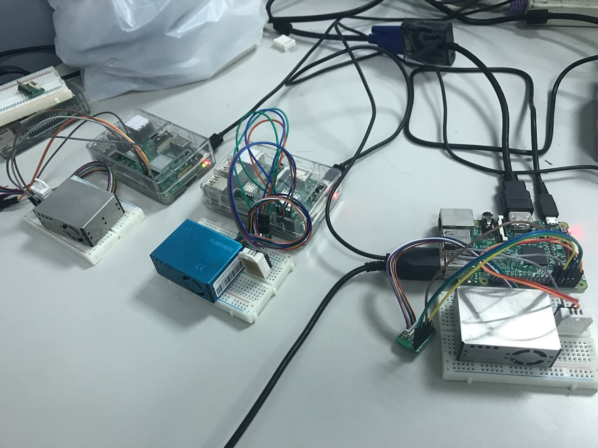
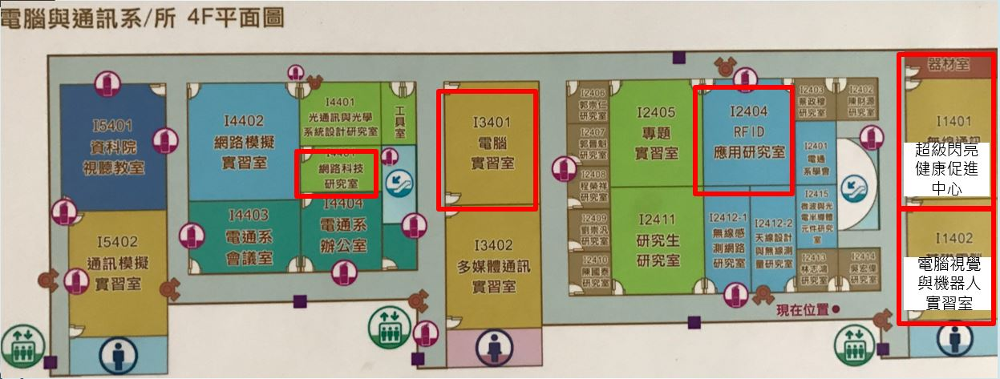
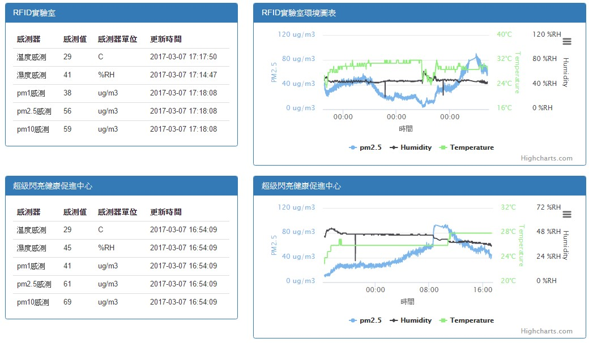

智慧型生活服務機器人之設計、感測與決策應用
有四台感測設備規劃以溫濕度DHT22與PM2.5空氣感測器來做教室與研究室的環境感測，抓取到的數據可以透過遠端網頁來監看即時數值，加上歷史圖表可以知道哪間教室與研究室的空氣品質與溫濕度變化，針對這些數值變化來針對這些教室以及研究室做出改善。
系統架構設計

環境感測設備架設在圖上5個紅線區域中做環境監測。
技術領域:
- - HTML、JavaScript、Ajax
- - PHP
- - MySQL
- - PHPMyAdmin
- - Python
- - Raspberry Pi 3
網頁成果:
